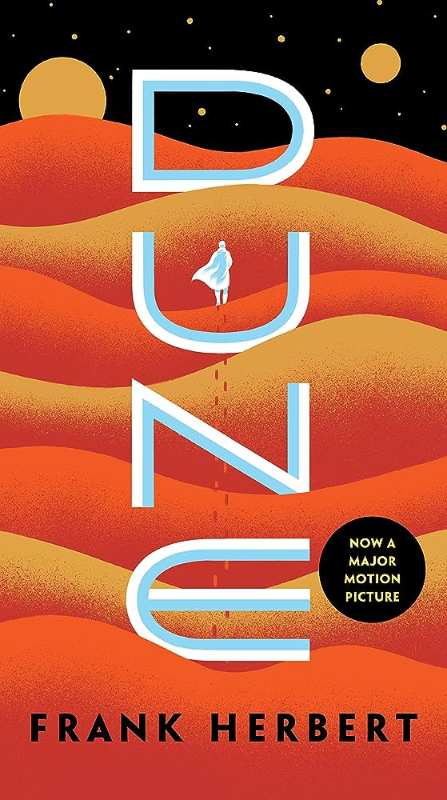

Ciencia ficcion

{kind=link}
{kind=link}
{kind=link}

Dune
La novela sigue la historia de Paul Atreides, un joven noble cuya familia es asignada al desierto planeta Arrakis.
Ver más detalles{kind=link}
Soy Leyenda
La novela sigue a Robert Neville, el último hombre sano en la Tierra, quien se enfrenta a una plaga.
Ver más detalles{kind=link}
2001: Odisea en el espacio
La novela sigue la misión espacial de la nave Discovery One, controlada por el superordenador HAL 9000.
Ver más detalles{kind=link}

Guía del autoestopista galáctico
La novela sigue las aventuras de Arthur Dent, un humano que es rescatado de la destrucción de la Tierra.
Ver más detalles{kind=link}
El cuento de la criada
La novela está ambientada en la república totalitaria de Gilead, donde las mujeres fértiles son sometidas como concubinas para producir hijos para la élite.
Ver más detalles{kind=link}
Ubik
En un futuro donde la muerte no es el final, sino una transición a otro estado de existencia, la realidad se vuelve incierta.
Ver más detalles{kind=link}